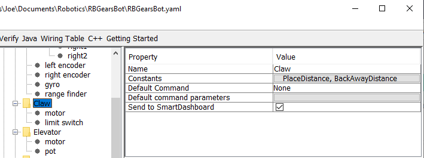

Writing the Code for a Subsystem
Adding code to create an actual working subsystem is very straightforward. For simple subsystems that don’t use feedback it turns out to be extremely simple. In this section we will look at an example of a Claw subsystem. The Claw subsystem also has a limit switch to determine if an object is in the grip.
RobotBuilder Representation of the Claw Subsystem
The claw at the end of a robot arm is a subsystem operated by a single VictorSPX Motor Controller. There are three things we want the motor to do, start opening, start closing, and stop moving. This is the responsibility of the subsystem. The timing for opening and closing will be handled by a command later in this tutorial. We will also define a method to get if the claw is gripping an object.
Adding Subsystem Capabilities
11// ROBOTBUILDER TYPE: Subsystem.
12
13package frc.robot.subsystems;
14
15
16import frc.robot.commands.*;
17import edu.wpi.first.wpilibj.livewindow.LiveWindow;
18import edu.wpi.first.wpilibj2.command.SubsystemBase;
19
20// BEGIN AUTOGENERATED CODE, SOURCE=ROBOTBUILDER ID=IMPORTS
21import edu.wpi.first.wpilibj.DigitalInput;
22import edu.wpi.first.wpilibj.motorcontrol.MotorController;
23import edu.wpi.first.wpilibj.motorcontrol.PWMVictorSPX;
24
25 // END AUTOGENERATED CODE, SOURCE=ROBOTBUILDER ID=IMPORTS
26
27
28/**
29 *
30 */
31public class Claw extends SubsystemBase {
32 // BEGIN AUTOGENERATED CODE, SOURCE=ROBOTBUILDER ID=CONSTANTS
33public static final double PlaceDistance = 0.1;
34public static final double BackAwayDistance = 0.6;
35
36 // END AUTOGENERATED CODE, SOURCE=ROBOTBUILDER ID=CONSTANTS
37
38 // BEGIN AUTOGENERATED CODE, SOURCE=ROBOTBUILDER ID=DECLARATIONS
39private PWMVictorSPX motor;
40private DigitalInput limitswitch;
41
42 // END AUTOGENERATED CODE, SOURCE=ROBOTBUILDER ID=DECLARATIONS
43
44 /**
45 *
46 */
47 public Claw() {
48 // BEGIN AUTOGENERATED CODE, SOURCE=ROBOTBUILDER ID=CONSTRUCTORS
49motor = new PWMVictorSPX(4);
50 addChild("motor",motor);
51 motor.setInverted(false);
52
53limitswitch = new DigitalInput(4);
54 addChild("limit switch", limitswitch);
55
56
57
58 // END AUTOGENERATED CODE, SOURCE=ROBOTBUILDER ID=CONSTRUCTORS
59 }
60
61 @Override
62 public void periodic() {
63 // This method will be called once per scheduler run
64
65 }
66
67 @Override
68 public void simulationPeriodic() {
69 // This method will be called once per scheduler run when in simulation
70
71 }
72
73 public void open() {
74 motor.set(1.0);
75 }
76
77 public void close() {
78 motor.set(-1.0);
79 }
80
81 public void stop() {
82 motor.set(0.0);
83 }
84
85 public boolean isGripping() {
86 return limitswitch.get();
87 }
88
89}
11// ROBOTBUILDER TYPE: Subsystem.
12
13// BEGIN AUTOGENERATED CODE, SOURCE=ROBOTBUILDER ID=INCLUDES
14#include "subsystems/Claw.h"
15#include <frc/smartdashboard/SmartDashboard.h>
16
17// END AUTOGENERATED CODE, SOURCE=ROBOTBUILDER ID=INCLUDES
18
19Claw::Claw(){
20 SetName("Claw");
21 // BEGIN AUTOGENERATED CODE, SOURCE=ROBOTBUILDER ID=DECLARATIONS
22 SetSubsystem("Claw");
23
24 AddChild("limit switch", &m_limitswitch);
25
26
27 AddChild("motor", &m_motor);
28 m_motor.SetInverted(false);
29
30 // END AUTOGENERATED CODE, SOURCE=ROBOTBUILDER ID=DECLARATIONS
31}
32
33void Claw::Periodic() {
34 // Put code here to be run every loop
35
36}
37
38void Claw::SimulationPeriodic() {
39 // This method will be called once per scheduler run when in simulation
40
41}
42
43// BEGIN AUTOGENERATED CODE, SOURCE=ROBOTBUILDER ID=CMDPIDGETTERS
44
45// END AUTOGENERATED CODE, SOURCE=ROBOTBUILDER ID=CMDPIDGETTERS
46
47
48void Claw::Open() {
49 m_motor.Set(1.0);
50}
51
52void Claw::Close() {
53 m_motor.Set(-1.0);
54}
55
56void Claw::Stop() {
57 m_motor.Set(0.0);
58}
59
60bool Claw::IsGripping() {
61 return m_limitswitch.Get();
62}
Add methods to the claw.java or claw.cpp that will open, close, and stop the claw from moving and get the claw limit switch. Those will be used by commands that actually operate the claw.
Note
The comments have been removed from this file to make it easier to see the changes for this document.
Notice that member variable called motor and limitswitch are created by RobotBuilder so it can be used throughout the subsystem. Each of your dragged-in palette items will have a member variable with the name given in RobotBuilder.
Adding the Method Declarations to the Header File (C++ Only)
11// ROBOTBUILDER TYPE: Subsystem.
12#pragma once
13
14// BEGIN AUTOGENERATED CODE, SOURCE=ROBOTBUILDER ID=INCLUDES
15#include <frc2/command/SubsystemBase.h>
16#include <frc/DigitalInput.h>
17#include <frc/motorcontrol/PWMVictorSPX.h>
18
19// END AUTOGENERATED CODE, SOURCE=ROBOTBUILDER ID=INCLUDES
20
21/**
22 *
23 *
24 * @author ExampleAuthor
25 */
26class Claw: public frc2::SubsystemBase {
27private:
28 // It's desirable that everything possible is private except
29 // for methods that implement subsystem capabilities
30 // BEGIN AUTOGENERATED CODE, SOURCE=ROBOTBUILDER ID=DECLARATIONS
31frc::DigitalInput m_limitswitch{4};
32frc::PWMVictorSPX m_motor{4};
33
34 // END AUTOGENERATED CODE, SOURCE=ROBOTBUILDER ID=DECLARATIONS
35public:
36Claw();
37
38 void Periodic() override;
39 void SimulationPeriodic() override;
40 void Open();
41 void Close();
42 void Stop();
43 bool IsGripping();
44 // BEGIN AUTOGENERATED CODE, SOURCE=ROBOTBUILDER ID=CMDPIDGETTERS
45
46 // END AUTOGENERATED CODE, SOURCE=ROBOTBUILDER ID=CMDPIDGETTERS
47 // BEGIN AUTOGENERATED CODE, SOURCE=ROBOTBUILDER ID=CONSTANTS
48static constexpr const double PlaceDistance = 0.1;
49static constexpr const double BackAwayDistance = 0.6;
50
51 // END AUTOGENERATED CODE, SOURCE=ROBOTBUILDER ID=CONSTANTS
52
53
54};
In addition to adding the methods to the class implementation file, Claw.cpp, the declarations for the methods need to be added to the header file, Claw.h. Those declarations that must be added are shown here.
To add the behavior to the claw subsystem to handle opening and closing you need to define commands.